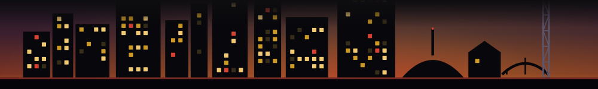

Every week Fleeting crawls Nashville for time-limited windows -- the dinners, pop-ups, residencies, markets and runs that are here then gone -- and records when each one opens and closes. This is the best-of cut of that record: the windows that lasted the longest, and the neighborhoods with the most fleeting windows of all. Not an all-time list -- the window we have so far.
Days from stated open to stated close, counted inclusively. Only windows we watched begin and end inside the record qualify; recurring or episodic listings (more than one start date) are left out -- scattered nights are not one continuous run.
| 1 | Nashville Shores WaterparkNashville Shores Lakeside Resort · HermitageJul 21 - Sep 20 | 62 days |
| 2 | Back 2 The Video Store: A 90s Speakeasy BarBack 2 The Video Store · GermantownJul 30 - Sep 19 | 52 days |
| 3 | Back 2 The Video Store: A 90s Speakeasy Bar - NashvilleBack 2 The Video StoreJul 30 - Sep 19 | 52 days |
| 4 | Fever Candlelight ConcertsCentennial Park · MidtownAug 7 - Sep 27 | 52 days |
| 5 | Nashville Shores Waterpark - End-of-Season WindowNashville Shores Lakeside Resort · HermitageAug 15 - Sep 20 | 37 days |
| 6 | CatVideoFest 2026FranklinAug 9 - Sep 13 | 36 days |
| 7 | A Midsummer Night's Dream (Donate What You Will)Centennial Park · MidtownAug 20 - Sep 20 | 32 days |
| 8 | Shakespeare in the Park: A Midsummer Night's DreamCentennial Park · MidtownAug 20 - Sep 20 | 32 days |
| 9 | Treat a Pal! BOGO in the GardensCheekwood Botanical Gardens & Estate · Belle MeadeJul 1 - Jul 31 | 31 days |
| 10 | Murder with a Side of MeatballsThe Escape Game - Berry Hill · Berry HillJul 2 - Jul 31 | 30 days |
Distinct time-limited windows we have tracked in each neighborhood across the whole record.
| # | Neighborhood | Windows |
|---|---|---|
| 1 | Downtown | 612 |
| 2 | East Nashville | 162 |
| 3 | Franklin | 147 |
| 4 | Wedgewood-Houston | 120 |
| 5 | Midtown | 83 |
| 6 | Germantown | 75 |
| 7 | SoBro | 75 |
| 8 | Downtown Franklin | 59 |
We are a young newsletter: this is built from 120 days of record (Jun 25 - Oct 22, 2026), 17 weekly crawls. It is not an all-time ranking -- a window that opened before we started watching, or that is still open today, cannot win a "longest run" it did not finish in front of us, so it is left out. The record is still short; this is the best of the window we have, honestly bounded, and it grows each week.
The source is Fleeting's own weekly discovery crawl -- 17 snapshots between Jun 25 - Oct 22, 2026. A window is a distinct listing (its title and venue), counted once even if it appears across several weeks. A window is eligible for the longest-running ranking only when its stated open date and stated close date both fall inside our observation span and its close is on or before the day this page was built -- a window we watched from open to close. Days open is counted inclusively (a one-night window is 1 day). Windows that opened before we began crawling, or whose close is still in the future, are left out: we did not watch them run, so they do not get a superlative. Recurring or episodic listings -- anything with more than one distinct start date, like a concert run, a monthly series or a re-staged pop-up -- are excluded from this ranking too: scattered occurrences are not one continuous open period, so we do not credit them the span from their first night to their last (they still count toward the neighborhood leaderboard). The neighborhood leaderboard counts distinct windows carrying each neighborhood across the whole record. Every number here is produced by build_superlatives.py from the crawl record -- there are no hand-entered figures. The underlying ranking is published as JSON and CSV for anyone who wants to check or cite it. This is a sample of the curated time-limited windows Fleeting tracks, not a census of every Nashville event, and it is not an all-time list -- it is the window we have so far, and it grows each week.
How to cite: Data by Fleeting - Nashville, https://nashville.fleeting.city/superlatives/ · licensed CC BY 4.0
Most Nashville windows close within days. That is the whole problem Fleeting exists for. The Thursday list is the week's time-limited Nashville food, drink and events -- the ones that will be gone by the weekend -- in your inbox while they are still open. No alerts, no notifications; one email a week.
Get the Thursday list, free →Want the other cuts? the food-window churn rate, the window half-life, the raw open dataset, what is open or closing this week. Built October 23, 2026.